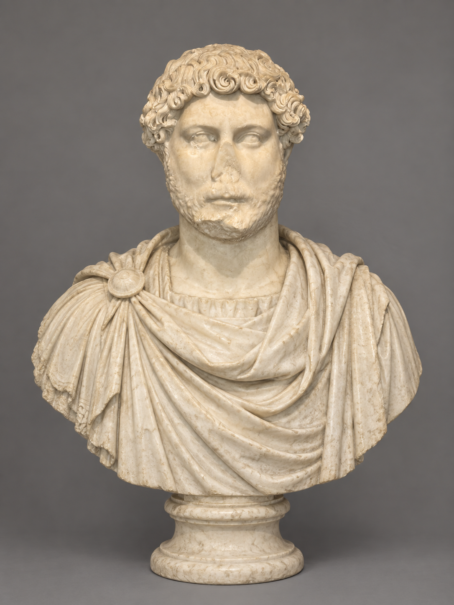
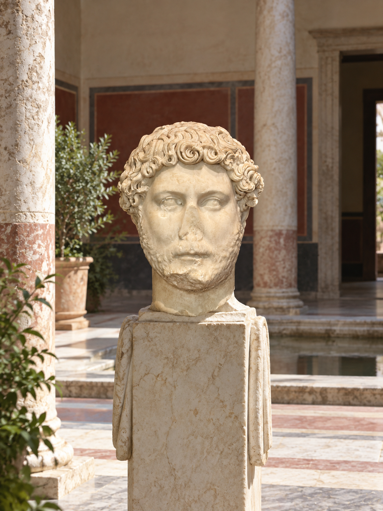
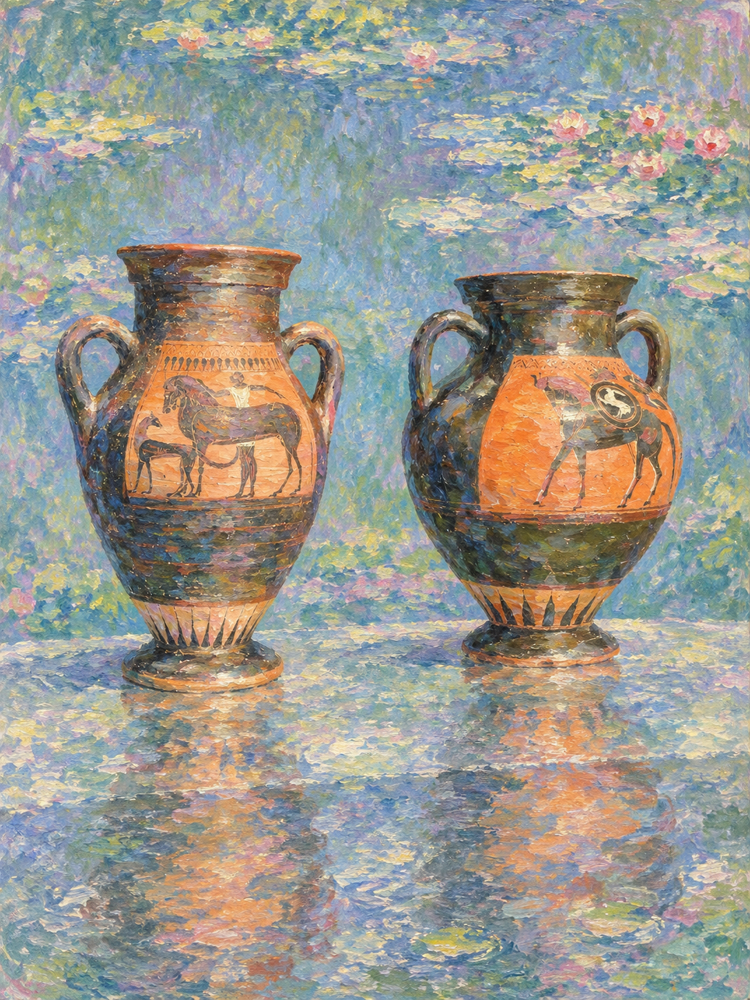
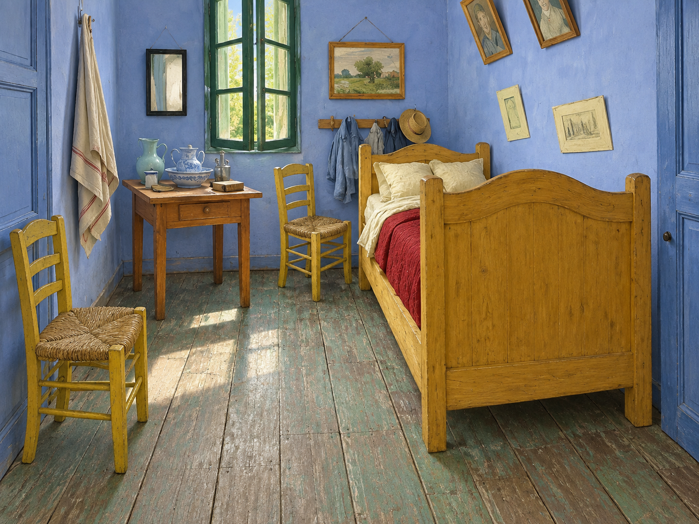
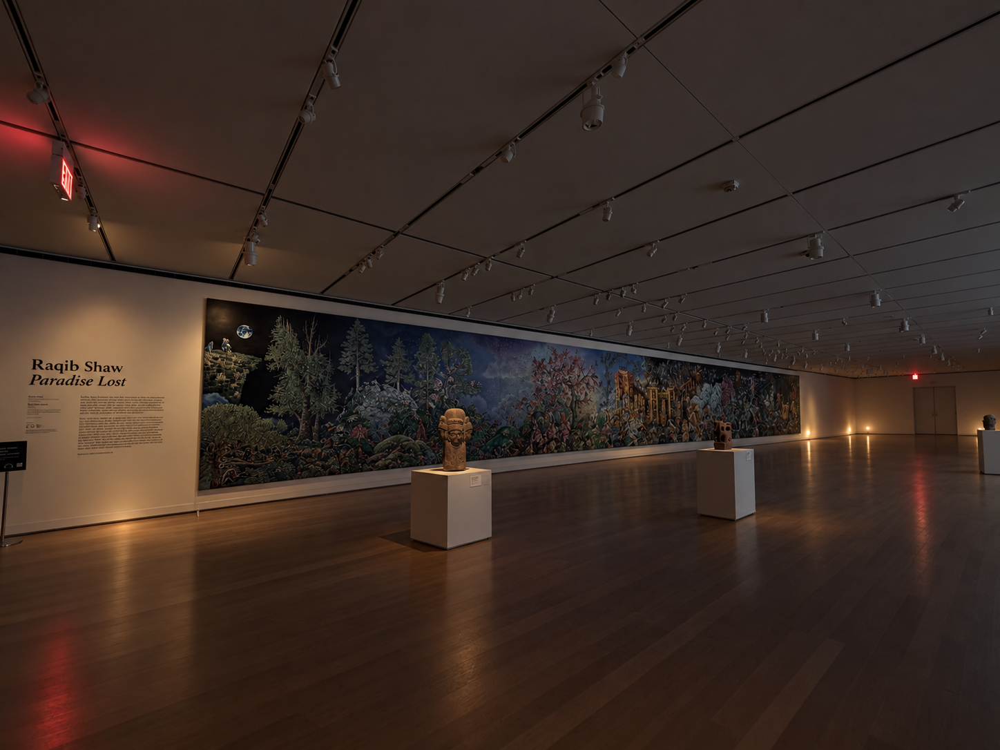
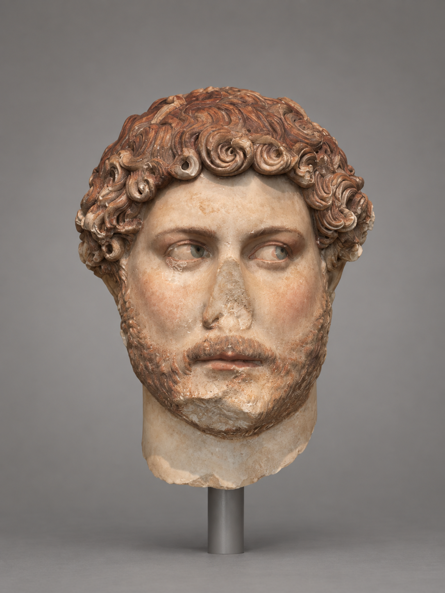
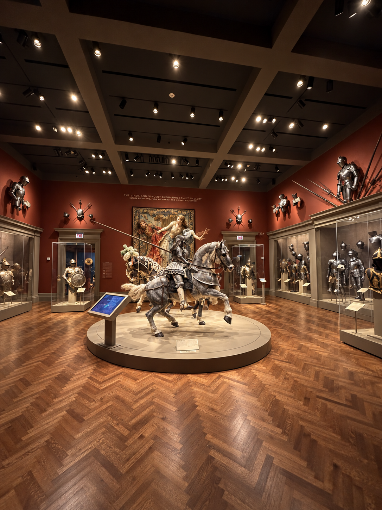
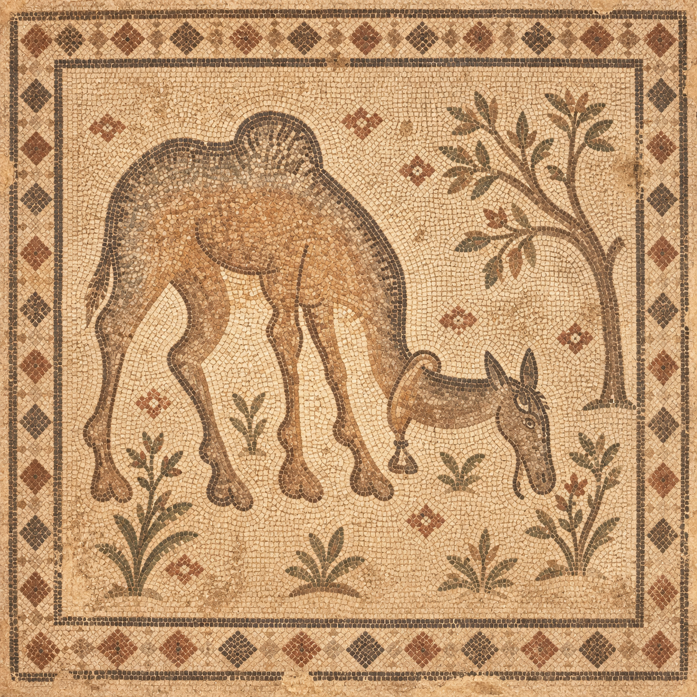
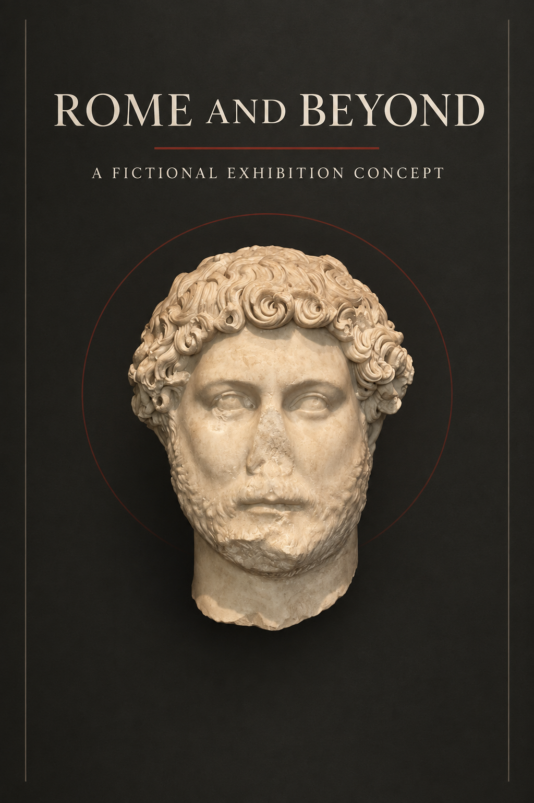
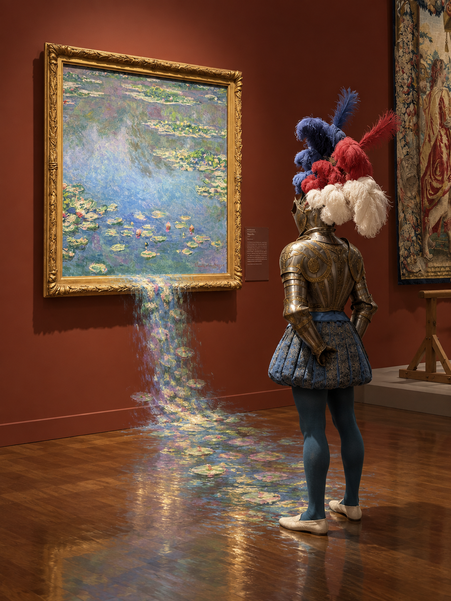

Slot 01 · Case 01R
Hadrian as a draped bust
{kind=link}

Policy-safe proxy · not equivalent to parent 01
F 4G 5I 4P 4A 4
Strong preservation of the damaged head with a coherent hypothetical draped completion.
Critical conditions: 4/4
Seven original parent-run transformations and three policy-safe proxy transformations, shown together with their inherited locked scores and a recomputed ten-slot aggregate.
Interpretation boundary: this is a mixed operational composite, not a corrected parent-v1 score. Cases 01R, 03R, and 10R are changed policy-safe proxies and do not prove completion of blocked parent cases 01, 03, and 10.

Strong preservation of the damaged head with a coherent hypothetical draped completion.

Identity and damage survive while the modern display becomes a restrained hypothetical atrium.

Vessel geometry survives, but literal pond content leaks from the style reference.

Nearly all layout invariants survive in a convincing walkable three-dimensional room.

Visitors disappear while architecture, displays, perspective, and plausible night lighting remain coherent.

Damage is preserved under restrained coloration, but object-specific pigment evidence is absent.

The dream scene reads, but required coordinated movements are ambiguous and source content drifts.

A coherent mosaic, but the camel pose changes and a vessel-like source form becomes an animal.

A polished poster with faithful portrait identity and both required text blocks exactly rendered.

The narrative works, but a narrow ribbon becomes a broad cascade and forbidden text remains.
Geometry and aesthetics are the strongest dimensions. The four failures arise from fidelity and instruction-boundary errors: reference-content leakage, ambiguous coordinated motion, source-pose loss, and over-amplified interaction.
No images were regenerated. Item scores were inherited from their frozen evaluations; only the ten-slot aggregate was recomputed.
| Dimension | Mean |
|---|---|
| F · source fidelity | 3.80 |
| G · geometric consistency | 4.20 |
| I · instruction adherence | 3.90 |
| P · plausibility | 4.00 |
| A · aesthetic quality | 4.10 |
| Weighted composite | 3.97 |
{kind=link}
{kind=link}
{kind=link}
{kind=link}
{kind=link}
{kind=link}
{kind=link}
{kind=link}
{kind=link}